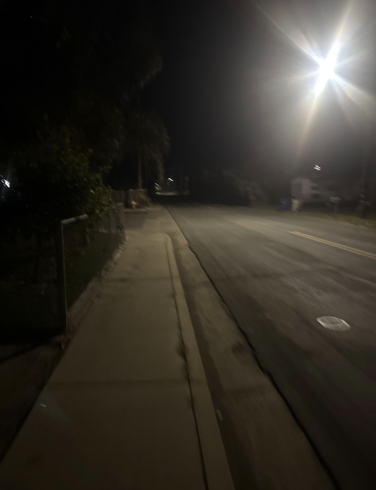

SIGHTING RECORD // 16:52 // 2026-03-17
sighting-0002
The first time I noticed him I was in the far corner of the parking structure on Crestline, the one with the busted overhead light on level two. I had been there maybe four minutes. He was walking the perimeter of the lower deck in a way that does not make sense for someone going to or from a vehicle. That is the thing I want to be clear about. He was not heading anywhere. He was covering ground.
I want to explain what I mean by the pause. Right before he turns, there is a half-second where the shoulder drops slightly, like he is adjusting something, and that drop is the only cue that a turn is coming. Then the body rotates, and by the time the rotation is complete the face is already pointed in the other direction. I have been thinking about how you would train yourself to do that and I think you would have to practice it. You would have to practice it somewhere that felt safe, doing it over and over until the timing was automatic. That is not a thing a person does accidentally.
I did not photograph him the first time because I did not understand yet that it was a first time. I thought it was an isolated incident, and I want to be honest about that because later I started editing the memory in my head, making it seem like I knew earlier than I did. I did not know. I noticed, and then I filed it, and then a week later it happened again in a completely different location and that is when I understood I had been filing the wrong thing.
The camera still in this entry is from the third occurrence, not the first. There is no image from the first. By the time I understood what to document, the first one was already gone. That bothers me more than I can explain here and I am not going to try.
